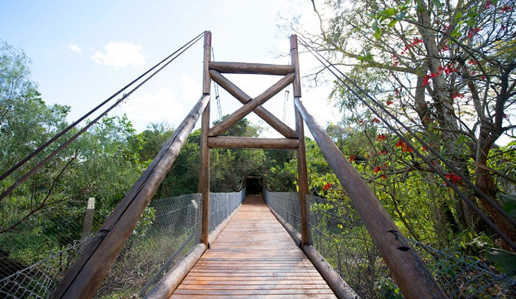
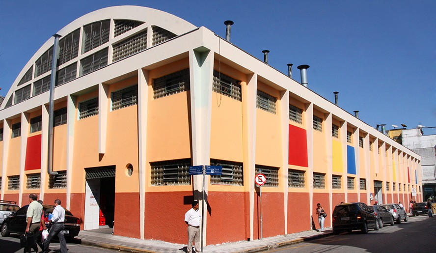
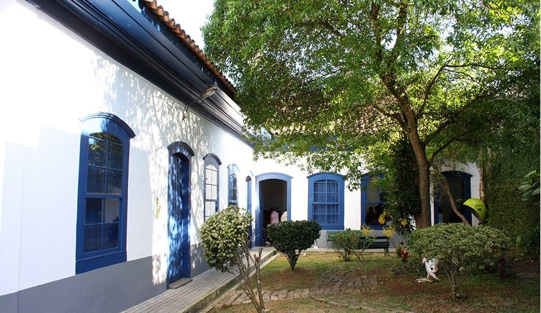
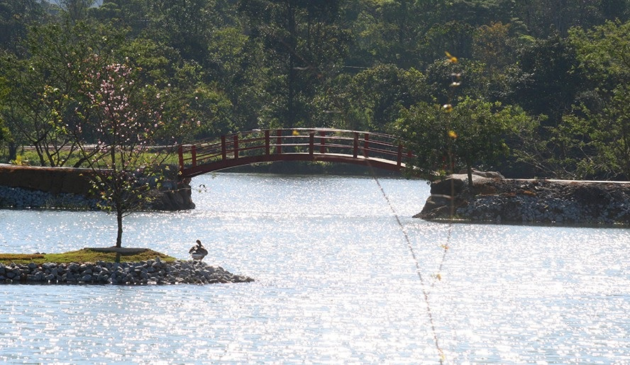
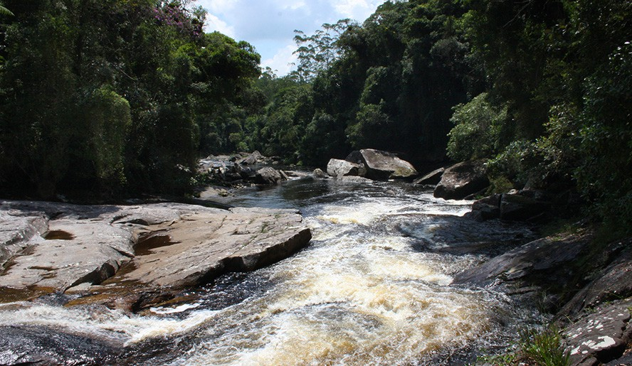
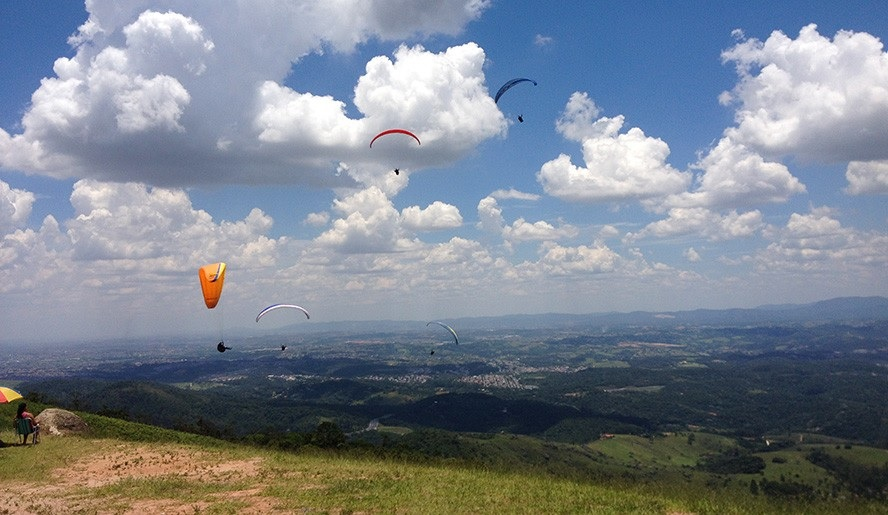

Ilha Marabá

Reinaugurada em junho de 2019, a Ilha Marabá funciona como um núcleo de educação ambiental, com visitas
monitoradas voltadas para alunos de escolas da cidade. O espaço tem 13,4 mil metros quadrados e conta
com trilha e ponte de madeira sobre o rio Tietê.
Mercado Municipal

Também conhecido como Mercadão, nasceu em 1858 no Largo da Matriz. Entre 1892 e 1912, um novo prédio foi
construído na Rua Coronel Souza Franco, mas foi demolido em 1960, para dar lugar ao atual, inaugurado em
1º de Setembro de 1965.
Casarão do Carmo

O Casarão do Carmo é uma construção do século XIX, em estilo colonial, de taipa de pilão e taipa de mão,
que foi concebido para servir de residência para a família Bourroul. A partir dos anos 30
passou a abrigar diversas atividades culturais e comerciais, até ser desapropriado e restaurado pela
Prefeitura Municipal na década de 80. Desde então, vem sendo ocupado para atividades culturais.
Parque Centenário da
Imigraçao Japonesa

Com 215 mil metros de área, o parque conta com quatro lagos com pontes flutuantes e um museu que retrata
a história dos imigrantes japoneses, com vários objetos dos imigrantes doados ao museu. O parque está
inserido na Área de Proteção Ambiental da Várzea do Rio Tietê. O ambiente e a arquitetura do parque são
inspirados na cultura japonesa, como o torii, um portão associado com templos xintoístas, parte da
cultura japonesa.
Parque das Neblinas

O Parque das Neblinas é um reserva privada administrada pelo Instituto Ecofuturo, localizada no limite
dos municípios de Mogi das Cruzes e Bertioga. É reconhecida desde 2006 como Posto Avançado da Reserva da
Biosfera do Cinturão Verde da Cidade São Paulo. É um pólo de educação ambiental, pesquisa científica,
cultivo de espécies ameaçadas e turismo ecológico. O Parque possui trilhas, nascente, cachoeira da
mineração e passarela suspensa (com 100 m de extensão).
Pico do Urubu

Com uma vista privilegiada de 360º da cidade e uma altitude de 1.160m acima do nível do mar, quem gosta
de se sentir nas nuvens encontra no Pico do Urubu a estrutura necessária para observar a cidade ou voar
de paraglider ou asa delta. O voo livre vem colorindo os céus de Mogi das Cruzes há quase 30 anos.